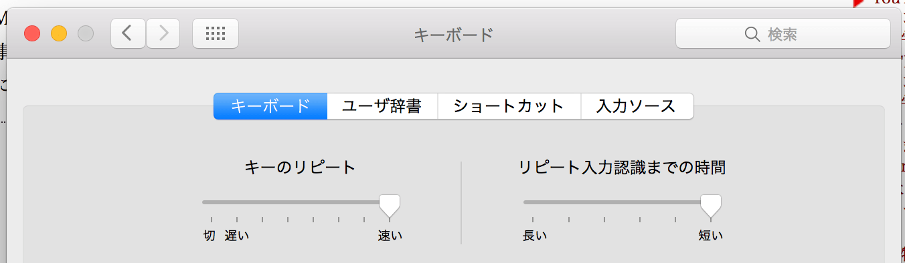

はじめに。
わたしは動きが「のそのそ」しています。
ずっと親族に言われ続けてきましたが、あまり気にしていませんでした。
ただ、仕事が遅いのは困りますね。。
1000ch先輩の義務教育
去年の終わり頃からプロジェクトでお世話になっている
1000ch先輩にショートカットキーやカーソル移動速度などの設定を教えてもらいました。
（もう5年目なのに…本当にありがとうございます🙇 ）
IDEはショートカット使ってすごい速いのにｗ
って言って教えてくれました。（優しい）
ショートカットキーの義務教育
Dockにカーソルを合わせてアプリケーションの移動をしているのを見て、
アプリの移動はショートカットキーを使いましょう！と義務教育を提案してくれました。
アプリケーションの移動
Command + Tab
ウィンドウの移動
Option + Tab
タブの移動
Option + Command + ←（→）
3日くらい経ってもつい癖でDockを使ってしまっていたので、Dockのアプリの大きさを最小にして矯正しましたｗ

慣れたら絶対ショートカットの方が早い😊
カーソル移動速度の設定
変えられることを知りませんでした💧
システム環境設定 → キーボード
（これもAlfredで「キーボード」入力で一発で辿り着けるのを初めて知りました🙌）
キーのリピート、リピート入力認識までの時間の設定を変えました。

どっちも最速ｗ
アプリを指定して開くopen
$ open . -a [アプリ名]
$ open . -a Visual\ Studio\ Code
とかとか。
頭文字入れたらTabで候補出てくるし、便利！（Tabで候補はzshの設定かも？）
そういえばずっとJetBrainsのIDEを使っているのですが、
謎に充電をドカドカ消費するようになってしまって急遽VSCode使ってます。
なんでだろ。。
画面のフィッティングアプリ
Spectacle を入れました。
他のアプリのショートカットと競合しないように
全画面： Option + Command + F
左寄せ： Option + ←
右寄せ： Option + →
にしました◎
他は使わないのでOFFに〜
おわり
こんな感じでちょっぴりスピードアップしました〜〜
やったね！
Please comment!